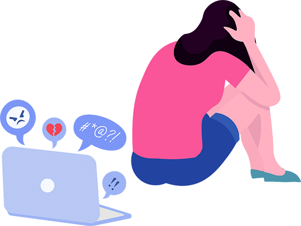

Hacking into someone's social profile. Being rude to someone in an online game. Spreading rumours about someone online.
These are all exapmles of cyberbullying
If you see cyberbullying you contact a trusted adult or email the platform you are using.If you are being bullied immidietly block the person and continue through the other steps.
Parents are also in positions where they may notice children’s behavior changes. There are things that you can do to address or prevent cyberbullying.For example, Speaking to them privatly can help you figure out whats wrong.
From- https://www.stopbullying.gov/ : "cyberbullying is defined as the use of technology to harass, threaten, embarrass, or target another person. cyberbullying can take many forms, such as sending threatening or offensive messages, posting embarrassing photos or videos, and creating websites to make fun of others. Cyberbullying can have serious consequences for both the victim and the bully. Victims of cyberbullying can experience depression, anxiety, and other emotional distress, while bullies may face disciplinary action from their school or legal consequences if their actions are deemed to be criminal. It is important to take a stand against cyberbullying and ensure that everyone is treated with respect and dignity online."